Kapitel 11 Lineær regressionsanalyse
Hvis en variabel Y, påvirkes lineært af en anden X, kan vi bestemme en lineær funktion til at forudsige værdien af Y for værdier af X. Nedenfor er et mini-eksempel vi kun benytter for at vise hvad det er vi beregner. Vi går ikke i detaljer med de matematiske beviser og formler bag teknikken.
11.1 Joe and The Juice
En kvik juicer har observeret hvordan vejret er, og hvor mange Go Away Doc drinks, der er solgt.
| Temperatur | Drinks |
|---|---|
| 2 | 1 |
| 4 | 5 |
| 8 | 6 |
Det virker ikke logisk at salget på Joe and the Juice påvirker temperaturen, derimod giver det god mening at temperaturen påvirker salget af drinks. Vi angiver salget af drinks på y-aksen og temperaturen på x-aksen.
Variablen vi ønsker at forudsige, her salget af drinks, kalder vi:
- Y
- Responsvariablen
- Den forklarede variabel
- Den afhængige variabel
- Den endogene variabel
En variabel vi bruger til at forudsige, her temperaturen, kaldes:
- X
- Prædiktoren
- Den forklarende variabel
- Den uafhængige variabel
- Den eksogene variabel
Baseret på observationerne kan vi forsøge at forudsige salget af drinks, til dette formål opstiller vi en lineær model. Normalt når vi har en lineær funktion har vi i matematik lært at denne har forskriften \[y=ax+b\] Når vi har at gøre med lineær regression bruger vi typisk betegnelsen \(\beta_1\) eller mere sigende \(\beta_{temperatur}\) eller \(\beta_{temp}\) om hældningskoefficienten \(a\). Vi bruger ofte betegnelsen \(\beta_0\) eller \(\alpha\) om skæringen med y-aksen b også kaldet interceptet.
Det betyder vores gamle matematik formel for linjen \[y=ax+b\] Bliver til vores model af virkeligheden: \[\hat{Y}=\hat{\beta}_{temp} \cdot X_{temp}+\hat{\beta}_0\] For at vi kan bruge modellen til at sige noget om salget af drinks, skal vi baseret på vore observationer estimere hældningskoefficienten \(\beta_{temp}\) og skæringen \(\beta_0\). Vi kender ikke de sande værdier parametrene \(\beta_{temp}\) og \(\beta_0\), men ud fra vore faktiske observationer kan vi give vores bedste gæt parameterestimaterne \(\hat{\beta}_{temp}\) og \(\hat{\beta}_0\). Software beregner parameterestimaterne til linjen, der bedst beskriver sammenhængen mellem den uafhængige variabel temperatur og responsvariablen drinks. Vi kalder denne linje regressionslinjen. Da den beregnede værdi af antallet af drinks er baseret på estimater, vælger vi at skrive \(\hat{Y}\) i stedet for \(Y\)
Nedenstående forklaring på metoden til beregning af modellens forklaringskraft, kan være svær at forstå. Det er ikke nødvendigt for at fortolke modellerne, men kan give indsigt i mekanikken bag modellen.
Når vi beregner estimaterne for regressionslinjen, bruger vi en metode, der kaldes mindste kvadraters metode (på engelsk ordinary least squares OLS) til at beregne vore estimater.
Vi får software til at beregne de 2 estimater \[\hat{\beta}_{temp}=0.75 ~~ \hat{\beta}_0=0.5\] Disse parameterestimater kan vi nu indsætte i modellen:
\[\hat{Y}=\hat{\beta}_{temp} \cdot X_{temp}+\hat{\beta}_0\] \[\hat{Y}=0.75 \cdot X_{temp}+0.5\]
Når vi kender en temperatur fx. 6 grader, kan vi indsætte denne værdi i regressionslinjen, i stedet for \(X_{temp}\) og forudsige/estimere hvad salget af drinks vil være. \[\hat{Y}=0.75 \cdot X_{temp}+0.5 \Leftrightarrow\] \[\hat{Y}=0.75 \cdot 6+0.5\Leftrightarrow\] \[\hat{Y}=5\]
Vi kan i figuren se at de sorte prikker er faktiske observationer, og linjen er modellen af virkeligheden. Vi har beregnet modellens forudsigelse af drinkssalget ved de 3 temperaturer 2, 4 og 8 grader, modellens forudsigelser er illustreret ved sorte trekanter. Vi kalder forskellen mellem faktiske og observerede værdier for residualer, definitionen for residualer er altså faktisk minus observeret værdi. Man benytter ofte det græske bogstav epsilon \(\epsilon\) til at betegne residualerne. For at have et mål for hvor stor forskellen mellem modellen og de faktiske observationer er samlet set, bruger vi summen af de kvadrerede residualer SSR. Residualer af observerede salg af drinks beregnes som: \[SSR=(1-2)^2+(5-3.5)^2+(6-6.5)^2=1+2.25+0.25=3.5\] Vi kalder værdien for summen af kvadrerede residualer på engelsk SSR sums of squared residuals, de 3 kvadrerede residualer er illustreret som de 3 grå kvadrater i figuren nedenfor.
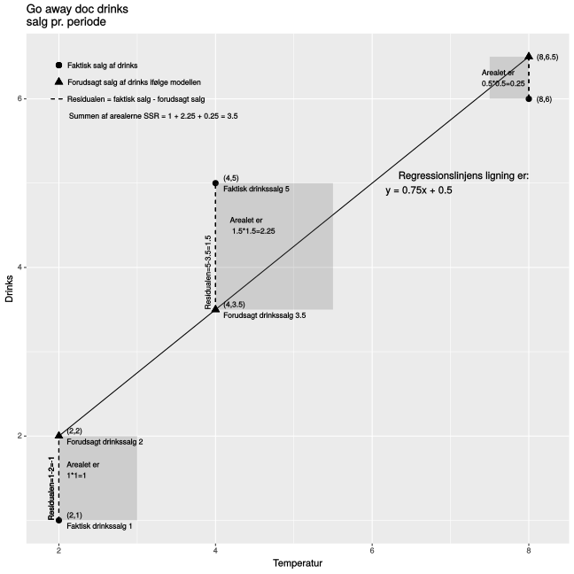
Hvis der ikke er en lineær sammenhæng mellem temperatur og drinkssalg, og regressionslinjen derfor ikke kan bruges til at forklare salget, så kan vi i stedet benytte det observerede gennemsnitlige salg af drinks. Vi beregner det gennemsnitlige salg af drinks i stikprøven som \(\frac{1+5+6}{3}=\frac{12}{3}=4\). Vi beregner nu de summen af de kvadrerede afvigelser fra det gennemsnitlige observerede salg af drinks som: \[SST=(1-4)^2+(5-4)^2+(6-4)^2=9+1+4=14\]
Vi kalder værdien for summen af kvadrerede afvigelser total på engelsk SST sums of squared total, de 3 kvadrerede afvigelser er illustreret som de 3 grå kvadrater i figuren nedenfor.
Ekstrapolation  To statistikere flyver fra København til New York. En time inde i flyvningen meddeler piloten, man har mistet en motor, der er dog ikke grund til bekymring, der er stadig 3 tilbage, rejsetiden vil dog blive 11 i stedet for 9 timer.
To statistikere flyver fra København til New York. En time inde i flyvningen meddeler piloten, man har mistet en motor, der er dog ikke grund til bekymring, der er stadig 3 tilbage, rejsetiden vil dog blive 11 i stedet for 9 timer.
Lidt efter meddeler piloten, at man har mistet yderligere en motor, der er dog stadig 2 tilbage, men rejsetiden vil nu være 15 timer.
Noget senere vender piloten tilbage 3. motor har også sat ud, nu vil det tage 22 timer at nå frem.
Hvorpå den ene statistiker udbryder “Fandens! hvis den sidste motor sætter ud, vil vi være i luften i evigheder”
Vi kan vise hvor godt responsvariablen forklares ud fra den forklarende variabel i modellen, vha. forholdet mellem SSR og SST. Er SSR og SST næsten ens, vinder vi ikke meget ved at beskrive responsvariablen Y ud fra den forklarende variabel X. SST vil aldrig være mindre end SSR, da en linje med tilpasset hældningskoefficient altid vil beskrive observationerne mindst ligeså godt som en vandret linje. Vi beskriver modellens forklaringskraft ud fra R-kvadreret som er defineret som
\[1-\frac{SSR}{SST}=1-\frac{3.5}{14}=1-0.25=0.75\]
Vi kan udtrykke dette som at 75% af variationen i responsvariablen - Drinks solgt kan forklares ved variationen i den forklarende variabel - Temperatur. Denne forklaringskraft afhænger dog af om der er nok observationer, og at disse viser at hældningen på den rette linje er signifikant forskellig fra 0. Er hældningen på linjen 0, betyder det, at man sælger samme antal drinks ligegyldigt hvordan vejret er. Vi bør have flere observationer end de kun 3 vi benytter i dette minieksempel.
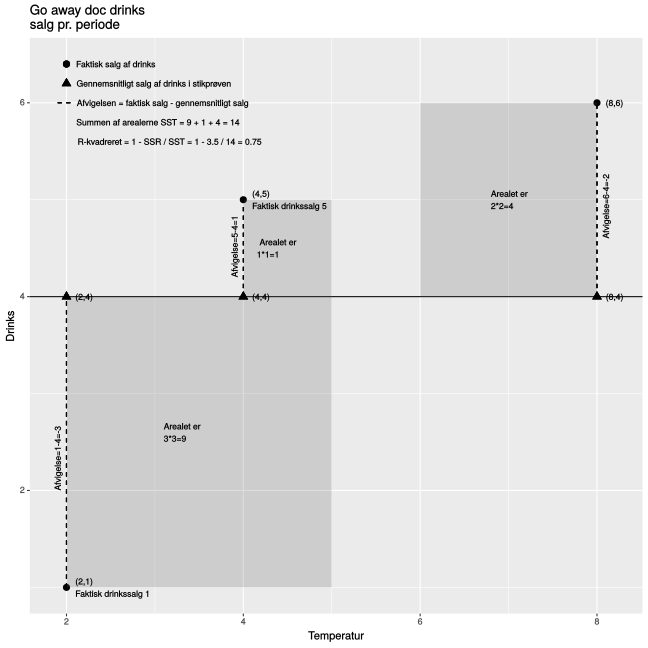
Her har vi kun en forklarende variabel temperatur, vi kalder derfor specielt analysen for simpel lineær regression. Vi vil senere se på analyse vha. lineær regression med flere forklarende variable, denne analysetype kalder vi for multipel lineær regression.
11.2 Freestat output lineær regression Joe and The Juice
Vi kan få software til at beregne output for os, i Freestat kan fanen mreg, benyttes til lineær regression. Vi skal altid taste værdier for responsvariablen Y i I-søjlen husk overskift. Vi sætter en eller flere forklarende variable i de efterfølgende søjler.
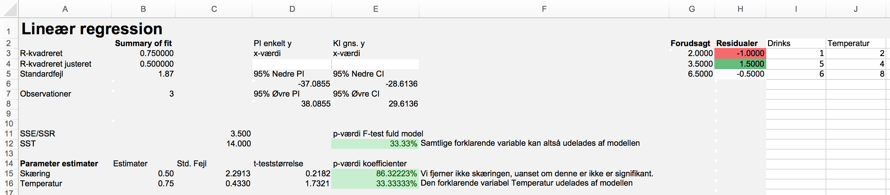
I cellen C11 ses SSR som vi tidligere regnede ud til at være 3.5.
I cellen C12 ses SST som vi tidligere regnede ud til at være 14.
I cellen B3 ses R-kvadreret som vi tidligere regnede ud til at være 0.75.
I cellen B15 ses estimatet for parameteren \(\beta_0\) altså \(\hat{\beta}_0\).
I cellen B16 ses estimatet for parameteren \(\beta_{temp}\) altså \(\hat{\beta}_{temp}\).
I cellerne I3-I5 har vi de faktiske værdier.
I cellerne G3-G5 har vi de forventede eller forudsagte værdier.
I cellerne H3-H5 har vi residualerne, dette er faktisk minus forudsagt.
Vi nævnte tidligere at modellen her egentlig er fjollet lille, dette resulterer i at den ikke kan bruges til noget, da den ene forklarende variabel ikke er signifikant.
Vi opstiller et t-test, for at afgøre om teperaturen har en effekt:
\[H_0:\beta_{temp}=0 \ Den\ forklarende\ variabel\ er\ ikke\ signifikant\]\[H_1:\beta_{temp}\neq 0 \ Den\ forklarende\ variabel\ er\ signifikant\]
Nulhypotesen betyder at vi ikke kan afvise at hældningen på regressionslinjen er 0, hvilket betyder at den vil være vandret. Hvis regressionslinjen er vandret har temperaturen ingen effekt på salget, salget vil jo være konstant ifølge modellen.
Alternativhypotesen siger derimod at den ene forklarende variabel er signifikant forskellig fra 0. Det vil altså sige at temperaturen har effekt på drinkssalg.
I cellen D16 ses t-teststørrelsen for testet af \(\beta_{temp}\), er teststørrelsen cirka mindre end -2 eller større end 2, får vi en p-værdi der er mindre end 0.05.
I cellen E16 ses p-værdien for testet, her er p-værdien større end 0.05, hvilket betyder, vi kan ikke forkaste nulhypotesen. Vi kan altså ikke afvise at \(\beta_{temp}=0\), hvilket vil sige temperaturen påvirker ikke salget af drinks signifikant. Havde vi haft en større stikprøvestørrelse, er det muligt, vi havde kunnet konkludere at hældningen \(\beta_{temp}\), var signifikant forskellig fra 0.
11.3 Forudsætninger lineær regression.
Der er 4 forudsætninger, der skal være opfyldt for at kvaliteten af vor lineære regressionsmodel er god. Linearitet, varianshomogenitet, uafhængighed residualer og normalitet residualer. Vi kan undersøge om de 4 forudsætninger er opfyldt, ved at se på 3 forskellige plots et linjetilpasningsplot, et residualplot og et normalfraktildiagram. Et linjetilpasningsplot er et xy-punktdiagram hvor regressionslinjen er indtegnet. De 3 plots tegnes automatisk, når man genererer en lineær regressionsmodel i Freestat.
11.3.1 Linearitet
For at benytte lineær regression, er den vigtigste forudsætning, at der er en lineær sammenhæng mellem den forklarende variabel X og responsvariablen Y. Er der ikke en lineær sammenhæng, kan vi ikke beskrive sammenhængen ved en lineær regressionsmodel. Herunder er nogle eksempler på linjetilpasningsplots, hvor der er problemer med forudsætningen om lineraritet.
I de fire røde linjetilpasningsplots, er der problemer med linearitet. Responsvariablen i plot 1 og 2, kunne bedre beskrives ved en parabel. Modellerne over- og undervurderer konsekvent værdien af y. Hvis forudsætningen om linearitet, ikke er opfyldt er det alvorligt, vi ser af figurerne at modellen ikke vil beskrive responsvariablen korrekt. Responsvariablen i plot 3 og 4 kunne synes at følge en eksponentiel eller polynomisk udvikling. Bemærk man kan ikke umiddelbart ud fra r-kvadereret og p-værdien for F- og t-testet, konstatere at der er problemer med linearitetsantagelsen. Vi kan imidlertid let se der er problemer med lineariteten i linjetilpasningsplots.
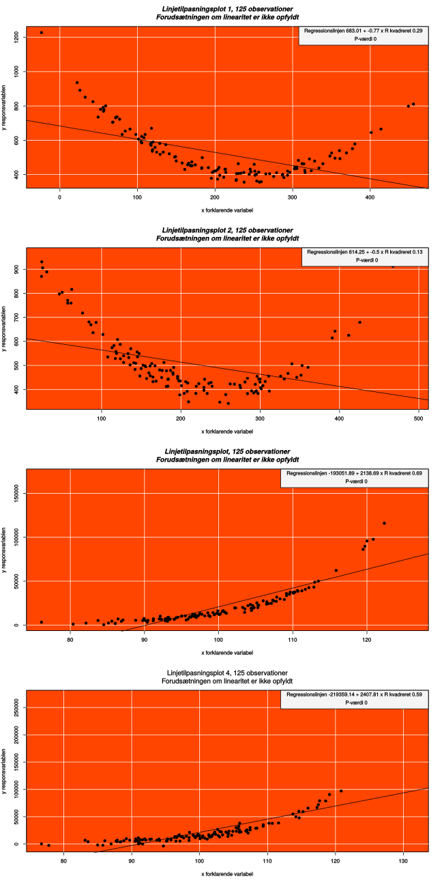
I de 4 linjetilpasningsplots nedenfor er problemet, at der tilsyneladende ikke er en lineær sammenhæng mellem den forklarende og responsvariablen. Vi kan her se ud fra R-kvadreret, at modellens forklaringskraft er meget lav for de 4 linjetilpasningsplots. Her giver det således ikke mening at beskrive responsvariablen ud fra den forklarende variabel.
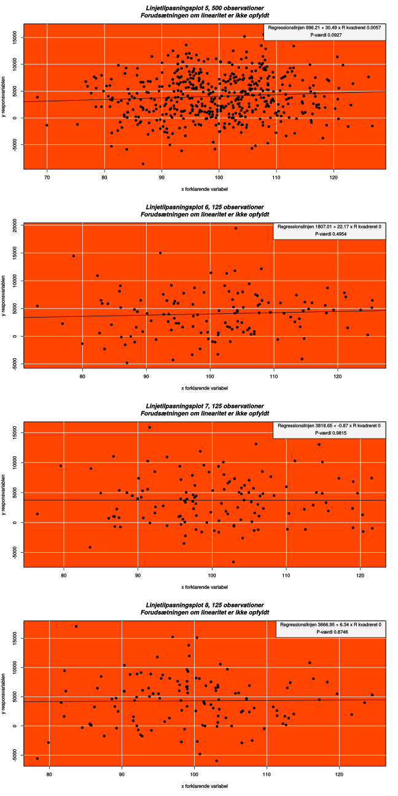
I de 4 linjetilpasningsplots 9 til 12, nedenfor er forudsætningen om linearitet opfyldt, bemærk p-værdierne alle er mindre end 5% samt R kvadreret er relativt høj.
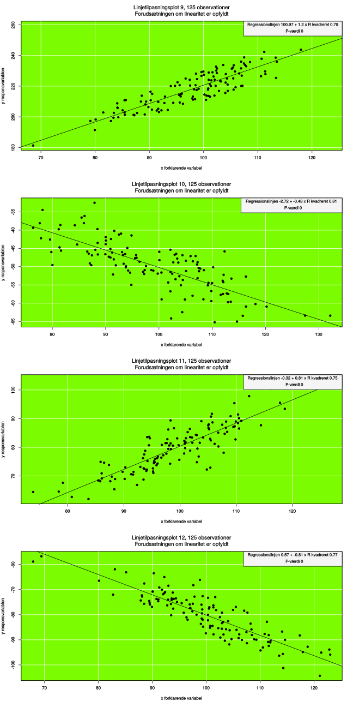
11.3.2 Varianshomogenitet
Varianshomogenitet betyder responsvariablen Y skal have samme afvigelse fra regressionslinjen ligegyldigt hvilken værdi den uafhængige variabel X har. I eksemplet med Joe and the Juice betyder det, for alle temperaturer skal det faktiske salg af drinks, afvige nogenlunde med samme størrelse. Hvis det fx. er 20 grader og afvigelsen i forhold til det af modellen forudsagte er 100 drinks mod en afvigelse på kun 5 drinks når det er 0 grader, er der ikke varianshomogenitet. Det er nemmest at undersøge om der er varianshomogenitet, ved at se på residualplottet. Hvis der fx. er en trompetform, som i residualplots 1, 2, 3 og 4 nedenfor, er antagelsen om varianshomogenitet ikke opfyldt. I residualplot 1 vil modellen være meget præcis, når X antager værdier mellem 60 og 90 og gradvis mere upræcis herefter. Der er er varianshomogenitet i resiualplots 5, 6, 7 og 8, det kan vi se da de lodrette afstande er nogenlunde de samme for alle værdier af den uafhængige variabel X, hvilket betyder variationen i afvigelserne er ens for alle værdier af den uafhængige variabel.
Er der varianshomogenitet, siger man med et fint specialudtryk, at der er homoskedasticitet, hvilket betyder der er ens varians for de forudsagte værdier og dermed ingen trompetform, forudsætningen er altså opfyldt. Hvis der er trompetform, siger vi med et fint ord, at der er heteroskedasticitet, så er der altså ikke varianshomogenitet, forudsætningen er således ikke opfyldt.
11.3.3 Uafhængighed residualer
Uafhængighed af residualer betyder at hverken værdien af X eller andre residualer påvirker en residual, målefejlen er altså tilfældig. I resiualplots 1, 2, og 3 er der uafhængighed mellem residualerne, lave residualer medfører fx ikke nødvendigvis lave eller høje residualer. Der er som før beskrevet ikke varianshomogenitet , men der er ikke afhængighed i residualerne. I resiualplots 4, 5 og 6, er der ikke uafhængige residualer, lave residualer medfører lave residualer og høje residualer medfører høje residualer. Der må ikke være systematik imellem residualerne, punkterne i residualplottet skal ligge tilfældigt som i residualplot 7 og 8, her er både antagelsen om varianshomogenitet og uafhængige residualer opfyldt.

11.3.4 Normalitet residualer
Vi kan undersøge normaliteten af residualerne ved at plotte disse i et normalfraktildiagram. Her skal punkterne ligge tæt omkring den rette linje. Af nedenstående plots er kun residualerne i 1. plot normalfordelte.
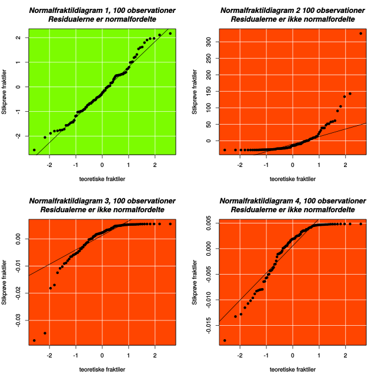
| Forudsætning | Plot | Udseende af plot |
|---|---|---|
| Linearitet af observationer | Linjetilpasningsplot | Observationerne følger en linjeform |
| Uafhængighed af residualerne | Residualplot | Der er ikke systematik i residualplottet |
| Varianshomogenitet/homoskedasticitet | Residualplot | Der er ikke trompetform i residualplottet |
| Normalitet af residualerne | Normalfraktildiagram for residualerne | Punkterne ligger pænt om den rette linje |
11.4 Simpel lineær regression Rømø
11.4.1 Video simpel lineær regression PI og KI
11.4.2 Video simpel lineær regression PI og KI
Hvis vi ønsker at undersøge om lejeprisen på sommerhuse afhænger af kvm. prisen, kan vi benytte lineær regressionsanalyse til at afgøre om lejeprisen kan forudsiges af kvm. prisen.
For at vi kan beskrive responsvariablen vha. lineær regression, skal der være en lineær sammenhæng, dette kan vi undersøge ved at plotte de 2 variable i et XY punktdiagram. I linket sommerhuse, findes data som lejepriser og størrelse, for 57 sommerhuse beliggende på Rømø. Vi kan undersøge, om om der er en lineær sammenhæng mellem disse i et punktdiagram. Det er naturligt at antage at lejeprisen afhænger af størrelsen og ikke omvendt, dvs. responsvariablen Y er lejepris og den uafhængige variabel X er størrelsen i kvm. Vi kan forvente en positiv sammenhæng mellem de 2 variable, dvs. jo større sommerhus jo større lejepris.
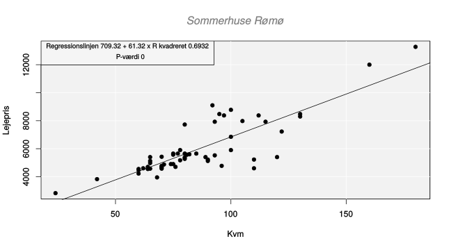
Ud fra figuren, er antagelsen om en lineær sammenhæng rimelig.
Når man producerer en simpel lineær regression i Freestat fanen linreg, får man automatisk linjetilpasningsplot, residualplot og normalfraktildiagram. Freestat giver os ligeledes følgende beregninger:
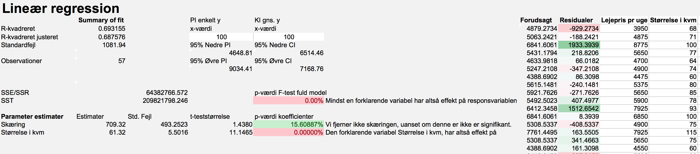
11.4.2.0.1 Brugbarhed, signifikanssandsynlighed og R-kvadreret
Modellen er signifikant ud fra p-værdien i cellen E12 eller E16, dvs. størrelsen har klart en effekt på lejeprisen. Vi tester begge steder hypotesen \[H_0:\beta_{Kvm}=0\ variablen\ kvm\ har \ ingen\ effekt\]\[H_1:\beta_{Kvm}\neq 0\ variablen\ kvm\ har\ effekt\] Størrelsen har en effekt, da p-værdien er mindre end 0.0001 og dermed er klart under signifikansniveauet på 5%. Vi forkaster nulhypotesen, og konstaterer den forklarende variabel Kvm. har en effekt på responsvariablen Lejepris pr. uge.
Estimatet for skæringen med y-aksen 709.32 er ikke signifikant, p-værdien i celle E15 15.61% er jo større end 5% signifikansniveauet, \[H_0:\beta_{0}=0\ Lejeprisen\ for\ et\ 0\ kvm\ hus\ er\ 0\ DKK\]\[H_1:\beta_{0}\neq 0\ Lejeprisen\ for\ et\ 0\ kvm\ hus\ er\ forskellig\ fra\ 0\ DKK\]
Skæringen kunne derfor være fx. 0. Normalt interesserer denne test os ikke, vi udelader derfor test af skæringen fra fremtidige analyser. For at sikre den optimale tilpasning af regressionslinjen (og dermed minimere residualerne), bibeholder vi altid skæringen i modellen.
Ud fra R-kvadreret i cellen B3 konstateres at 69% af variationen i responsvariablen Lejepris pr uge, kan forklares ud fra variationen i den forklarende variabel Kvm. Herudover skal 31% af variationen i lejepris, forklares ud fra andre faktorer, der ikke er beskrevet i modellen.
11.4.2.0.2 Model
Vi kan aflæse parameterestimaterne for \(\beta_0\) og \(\beta_{kvm}\) i cellerne B15 og B16, vi kan herefter opstille modellen: \[\hat{Y}=\hat{\beta}_0+\hat{\beta}_{Kvm}X\]\[\hat{Y}=709.32+61.32X\]
11.4.2.0.3 Tolkning af koefficienter
Ifølge modellen vil lejeprisen pr. uge for et hus på 0 Kvm. være 709.32. Her er det vigtigt at bemærke at vi ikke har observeret huse i nærheden af denne størrelse, der er derfor tale om ekstrapolation. Det er behæftet med usikkerhed at benytte modellen til forudsigelser udenfor intervallet understøttet af data. Vi bemærkede før at skæringen ikke er signifikant forskellig fra 0.
Ifølge modellen vil lejeprisen pr. uge stige med 61.32, for hver kvadratmeter større sommerhuset er.
Vi kan beregne hvad et 100 Kvm. sommerhus ifølge modellen koster:
\[709.32+61.32*100=6841.32\]
Bemærk her forudsiges en lejepris for en sommerhusstørrelse, der er understøttet af data, vi har jo observationer for sommerhuse der er mindre og større end 100 Kvm. Når vi forudsiger lejeprisen er der tale om interpolation.
Forudsiger vi en lejepris for et 10 eller 200 Kvm. sommerhus er der tale om ekstrapolation, dette er behæftet med usikkerhed.
11.4.2.1 Prædiktionsinterval
For den simple lineære regression, kan vi forudsige, i hvilket interval responsvariablen lejepris pr. uge vil ligge med 95% sandsynlighed, for en bestemt værdi af den uafhængige variabel Kvm. I celle D4, kan vi indtaste en vilkårlig x-værdi og bestemme et prædiktionsinterval også kaldet et forudsigelsesinterval. I Freestat output er indsat 100, hvilket svarer til at lejeprisen pr. uge vil med 95% sikkerhed ligge mellem D6 4649 DKK og D8 9034 DKK. for et 100 Kvm. sommerhus. Der er tale om et meget bredt interval hvilket skyldes, at vi udtaler os om et enkelt sommerhus.
11.4.2.2 Konfidensinterval
For den simple lineære regression, kan vi forudsige, i hvilket interval den gennemsnitlige lejepris pr. uge vil ligge med 95% sandsynlighed for en bestemt størrelse sommerhus.I celle E4, kan vi indtaste en vilkårlig x-værdi og bestemme et konfidensinterval. I Freestat output er indsat 100, hvilket svarer til at den gennemsnitlige lejepris pr. uge vil med 95% sikkerhed ligge mellem E6 6514 DKK og E8 7169 DKK. for et 100 Kvm. sommerhus. Bemærk konfidensintervallet er smallere end prædiktionsintervallet, da vi udtaler os om gennemsnittet og ikke et enkelt sommerhus.
11.4.2.3 Forudsætninger
Vi undersøger ligeledes om forudsætningerne om varianshomogenitet ved residualplottet, plottet ser fornuftigt ud, de største residualer er for sommerhuse med et areal omkring på 90 til 120 kvm, men vi vil her konstatere at der ikke er problemer med forudsætningen om varianshomogenitet.
Der er ikke nogen tydelig systematik i residualplottet, hvorfor vi konstaterer forudsætningen om uafhængighed af residualerne er opfyldt.
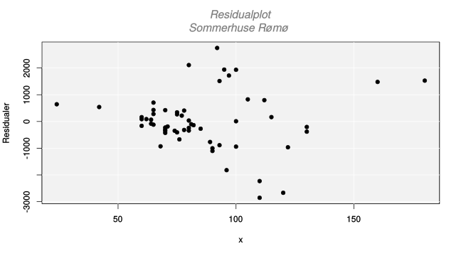
Der er i normalfraktildiagrammet store afvigelser i enderne, dette er ikke så kritisk som omkring medianen. Forudsætningen om normalitet af residualerne synes ikke opfyldt, hvilket bemærkes da dette har effekt på kvaliteten af modellen.
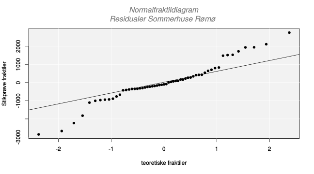
Spørgsmål sommerhuse Rømø.
Vi ser fortsat på datasættet med sommerhuse på Rømø Kan det seneste moderniseringsår forklare lejeprisen pr. uge?
Svar sommerhuse Rømø.
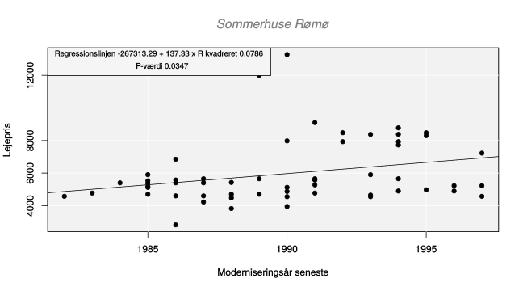
Vi får en p-værdi på 0.0347 altså mindre end signifikansniveauet 5%. Dette betyder vi kan forkaste nulhypotesen i testet: \[H_0:\beta_{Moderniseret}=0\ Moderniseret\ har\ ingen\ effekt\]\[H_1:\beta_{Moderniseret}\neq 0\ Moderniseret\ har\ effekt\]
Vi kan altså afvise at hældningen \(\beta_{Moderniseret}\) er nul, hvilket betyder moderniseringår seneste har signifikant effekt. Hvis moderniseringsåret er et år senere vokser lejeprisen med 137.33 DKK., hvilket giver god mening. Her giver skæringen absolut ikke mening, skæringen svarer jo til at den forklarende variabel årstal er lig med nul, hvilket jo ville betyde at ugelejen for et sommerhus moderniseret det år Jesus blev født ville være -267313.29 DKK. Man får altså over kvart million om ugen, for at bo i det gamle skrammelhus ifølge modellen. Her er naturligvis tale em ekstrem ekstrapolation der ikke giver mening.
Modellens forklaringskraft R-kvadreret er kun 0.0786, hvilket er meget lavt, det betyder der er mange andre faktorer, der forklarer lejeprisen. Vi ved jo fra forrige analyse, at også størrelsen på sommerhuset forklarer en del af lejeprisen. I næste afsnit se hvordan vi med multipel regressionsanalyse kan kombinere flere forklarende variable.Spørgsmål sommerhuse Rømø.
Kan afstand til strand forklare lejeprisen pr. uge? Svar sommerhuse Rømø.
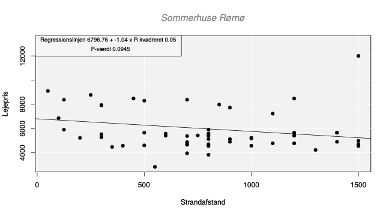
11.5 Multipel lineær regression
Lineære modeller i virkeligheden En vred far kommer i 2012 ind i en Target Butik lidt udenfor Minneapolis og forlanger at tale med bestyreren. Faderen er meget fortørnet over butikken sender datteren kupon-tilbud på graviditets produkter som bleer, graviditetstøj og vugger.
“Hun går kun i High-school, forsøger i at opmuntre hende til noget!!!”
Bestyreren beklager og ringer et par dage senere for at undskylde igen. Faderen er nu noget brødebetynget i telefonen. Der har været aktiviteter i hjemmet, han ikke var bekendt med, faderen skal være morfar til august.
Hvordan kunne Target vide datteren var gravid før faderen?
Target kender sine kunder godt, man registrerer kundernes indkøb med unik ID. Man giver blandt andet graviditetspakker, og kan således identificere, karakteristiske produkter gravide kunder køber. Targets statistiker Andrew Pole fandt bl.a. at i starten af andet trimester køber gravide en stor mængde parfumefri lotion. I de første 20 uger indkøbes store mængder vitamintilskud som zink, magnesium og calcium. Pole kunne nu ved hjælp af liniære modeller meget præcist forudsige om vilkårlige kunder var gravide, og hvor langt de var henne. Target kunne således målrette markedsføringsindsatsen og ved hjælp af kundepleje, sikre sig høj loyalitet, inden de store indkøbsbeslutninger til den lille baby . Target endte i en shitstorm og beklagede. I dag sørger man for ikke at vise kunderne, hvor meget man ved om dem, og sender kupontilbud på både plæneklippere og bleer.
Datasættet der er brugt i videoerne herunder kan hentes her
11.5.1 Dummy variable
11.5.2 Forudsætning multikollinaritet
11.5.3 Multipel lineær regression forudsagt værdi
11.6 Spørgsmål lineær regression
Spørgsmål korrelation USA afkast.
I datasættet USA afkast er der månedsafkast i procent for udvalgte aktier fra Dow Jones indekset samt månedsafkastet af selve indekset i procent. hent datasættet her.
- Er afkastet for Kellogs aktien og Microsoft aktien (MFST) korrelerede?
- Hvilke 2 aktier er mest korrelerede? Vi ser bort fra selve porteføljen?
- Hvorfor er korrelationerne overvejende positive?
- Hvorfor er alle aktier mere korrelerede med porteføljen?
- Hvilken aktie tror du er mest defensiv (dvs. mindst konjunkturfølsom)?
Svar korrelation USA afkast.
- Korrelationskoefficienten mellem Kellogs aktien og Microsoft aktien (MFST) er kun -0.001, får en p-værdi på 98.82 procent, aktierne er altså ikke korrelerede?
- JP Morgan JPM og BOA Bank of America er mest korrelerede. Korrelationskoefficienten er 0.6944, ved test for om aktierne er positivt korrelerede får vi en p-værdi på 0.0000. JPM og BOA er altså klart positivt korrelerede. Dette giver god mening da begge selskaber tilhører den finansielle sektor.
- Korrelationerne overvejende positive, da alle aktier overordnet påvirkes af konjunkturer samt risikovilligheden.
- Alle aktier er mere korrelerede med porteføljen, da porteføljen er opbygget af netop disse aktier.
- Den mest defensive aktie er Kellogs (fødevarer), denne aktie påvirkes ikke af konjunkturer i samme grad som de øvrige aktier, folk skal have mad uanset hvordan markedstemningen er.
Vi kan indsætte aktieafkastene i Freestat i corrm arket, vi får følgende output:
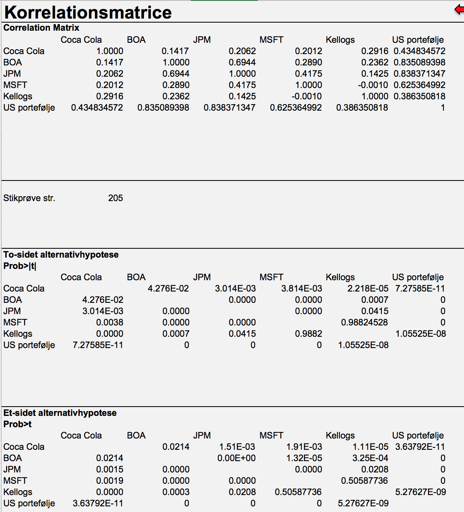
Spørgsmål 2016 8 Statistik Fin opg. 1.
Opgave 1 (30 %)
Nykøbing Bank ønsker opstille en model der kan forklare, hvilken risikogruppe en given kunde vil tilhøre. Banken antager, at variablen risikogruppe er kvantitativ.
Som udgangspunkt forventer Nykøbing Bank, at følgende variable kan bruges til at forklare kundernes placering i risikogruppe:
Alder målt som kundens alder i år
Bruttoindkomst pr. år målt i kr.
Kundeanciennitet målt som antal år kunden har været kunde i banken Om kunden har haft overtræk (0 = ikke overtræk og 1 = overtræk)
Om kunden bor i ejerbolig (0 = ikke ejerbolig og 1 = ejerbolig)
Banken har i maj 2016 ved tilfældig udvælgelse udtrukket en stikprøve på 28 kunder og undersøgt placering i rating-systemet samt de ovenfor nævnte variable.
Resultatet af denne dataindsamling findes i den udleverede Excel-fil.
Spørgsmål 1.1 (25 %)
Opstil en model der kan forklare kunders placering i rating-systemet. Alle forklarende variable skal være signifikante på 5 % niveau.
Fortolk dine resultater og vurdér i hvilken grad modellen er brugbar for Nykøbing Bank.
Spørgsmål 1.2 (5 %)
Beregn ved hjælp af din signifikante model fra spørgsmål 1.1 hvilken rating nedenstående kunde vil opnå:
Alder 34 år
Bruttoindkomst 580.000 kr. Har været kunde i banken i 3 år Har ikke haft overtræk
Bor i ejerbolig.
Du finder hele opgaven i linket:
Svar 2016 8 Statistik Fin opg. 1.
Spørgsmål Tyske aktier.
Hent datasættet Tyskland Afkast pr. md. i procent her., i dette datasæt er måneds afkast i procent siden år 2000 for Deutsche Bank, BAYER AG (Tysk kemigigant) samt hele DAX det tyske aktieindeks.
CAPM er en model til at prisfastsætte finansielle aktiver, vi gennemgår ikke modellen her. Vi kan ved hjælp af simpel lineær regression bestemme hvor volatil/følsom aktien er i forhold til resten af markedet her DAX det tyske aktie indeks. Den risikofri rente er for tiden meget lav her sættes den her til konstant 0, så kan modellen opstilles som:
\[Y_{aktie}=\beta\cdot X_{DAX}+\beta_0\]
Er størrelsen af \(\beta_{marked}\) mindre en 1, er aktien ikke særlig konjunkturfølsom, vi siger aktien er defensiv . Er \(\beta_{marked}\) større end en, siger vi aktien er cyklisk.
Hvad bliver beta-værdierne for hhv. Deutsche Bank og BAYER AG i forhold til DAX, når vi betragter måneds afkast siden år 2000?
For at beregne beta-værdierne, skal vi opstille 2 simple lineære regressionsmodeller med DAX indekset som forklarende variabel X.
Hvad bliver beta-værdierne for hhv. Deutsche Bank og BAYER AG i forhold til DAX, når vi betragter de seneste 40 måneders afkast?
Svar Tyske aktier.
Løsningsforslag ses herunder:
11.6.0.0.1 Deutsche Bank måneds afkast siden år 2000
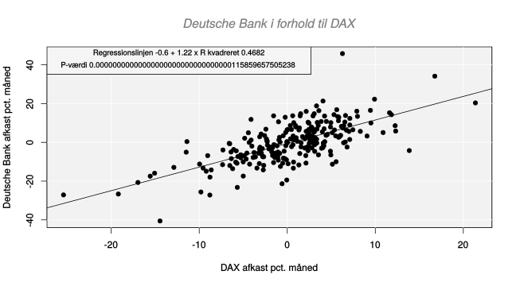
Vi får en p-værdi på 0 altså mindre end signifikansniveauet. Dette betyder vi forkaster nulhypotesen i testet: \[H_0:\beta=0\ DAX\ har\ ingen \ effekt\]\[H_1:\beta\neq 0\ DAX\ har\ effekt\] Vi kan altså afvise at hældningen \(\beta\) er nul, hvilket betyder DAX afkastet har signifikant effekt. Dette er ikke overraskende, da DAX indeholder Deutsche Bank. Bemærk hældningskoeficienten \(\beta=1.22\) i modellen er positiv hvilket hvilket er forventeligt, jo bedre tyske aktier performer, des bedre performer Deutsche Bank. Er Beta større end 1, hvilket betyder aktien er cyklisk, dette ville vi typisk forvente for en bankaktie. Når DAX stiger med 1 procent point, stiger Deutsche Bank med 1.22 procentpoint. Beta-værdien er behæftet med nogen usikkerhed den afhænger af tidshorisonten, perioden og længden vi beregner afkastet på. I eksemplet her er der tale om månedsafkast siden 2000-01-31 til 2019-06-30. Konjunkturer har stor betydning for resultatet, vi beregner afkast fra 2000-01-31, finanskrisen vil således påvirke vores resultat.
11.6.0.0.2 BAYER AG måneds afkast i procent siden år 2000
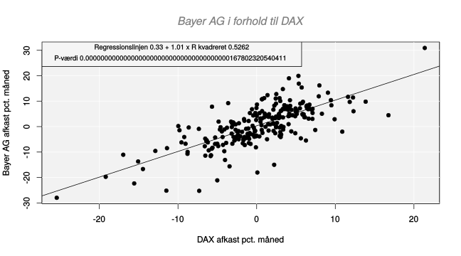
Vi får en p-værdi på 0 altså mindre end signifikansniveauet. Dette betyder vi forkaster nulhypotesen i testet:
\[H_0:\beta=0\ DAX\ har\ ingen \ effekt\]\[H_1:\beta\neq 0\ DAX\ har\ effekt\]
Vi kan altså afvise at hældningen \(\beta\) er nul, hvilket betyder DAX afkastet har signifikant effekt. Vi vil forvente at \(\beta\) er mindre end 1 for en kemiaktie, hvilket betyder aktien er defensiv, Når DAX stiger med 1 procent point, stiger Bayer AG med 1.01 procentpoint. Beta-værdien afhænger af tidshorisonten, perioden og længden vi beregner afkastet på. I eksemplet her er der tale om månedsafkast siden 2000-01-31 til 2019-06-30.
11.6.0.0.3 Deutsche Bank måneds afkast i procent de sidste 40 måneder
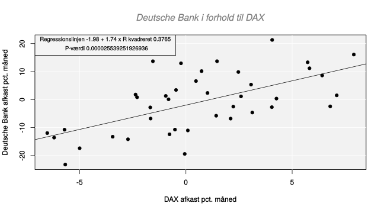
Vi får en p-værdi på 0.0000255 altså mindre end signifikansniveauet. Dette betyder vi forkaster nulhypotesen i testet:
\[H_0:\beta=0\ DAX\ har\ ingen \ effekt\]\[H_1:\beta\neq 0\ DAX\ har\ effekt\]
Vi kan altså afvise at hældningen \(\beta\) er nul, hvilket betyder DAX afkastet har signifikant effekt. Dette er ikke overraskende, da DAX indeholder Deutsche Bank, jo bedre/værre tyske aktier performer, des bedre/værre performer Deutsche Bank. Bemærk hældningskoeficienten \(\beta=1.74\) i modellen. Vi vil forvente at en bank aktie er cyklisk eller konjunkturfølsom dvs. \(\beta\) er større end 1. Når DAX stiger med 1 procent point, stiger Deutsche Bank med 1.74 procentpoint. Beta-værdien er behæftet med nogen usikkerhed den afhænger af tidshorisonten, perioden og længden vi beregner afkastet på. I eksemplet her er der tale om 40 måneders afkast fra 2016-03-31 til 2019-06-30.
11.6.0.0.4 BAYER AG måneds afkast i procent de sidste 40 måneder
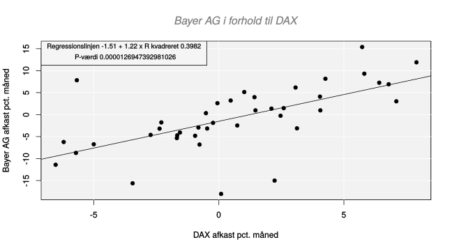
Vi får en p-værdi på 0.0000127 altså mindre end signifikansniveauet. Dette betyder vi forkaster nulhypotesen i testet:
\[H_0:\beta=0\ DAX\ har\ ingen \ effekt\]\[H_1:\beta\neq 0\ DAX\ har\ effekt\]